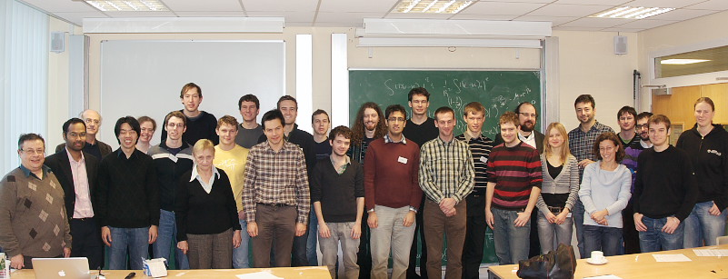

| |
|
|
Second South West Regional PDE Winter School
15-16 January 2010,
Mathematics Department,
Swansea University
|
|
|
The Second South West Regional PDE Winter School will be held
at Swansea University on Friday 15th and Saturday 16th of January 2010.
The School will address new trends in the modern theory and applications of Nonlinear PDE and
the Calculus of Variations. Particular areas will include qualitative analysis
of nonlinear elliptic and parabolic partial differential equations with emphasis
on existence and regularity problems.
The programme consists of two minicourses and two invited lectures, as well as short talks from PhD students and junior researchers.
There will be a reception and dinner on the Friday evening.
The School is planned to be held annually in the South West Region of the UK. The first School was organised by the Oxford Centre for Nonlinear PDE in Oxford in December 2008: The organising committee of the School is made up of members from: Oxford Centre for Nonlinear PDE, University of Bath, University of Bristol, University of Warwick and the Wales Institute of Mathematical and Computational Sciences.
|
|

Download the full size picture here (2.2 MB)
|
|

|
|
{kind=link}